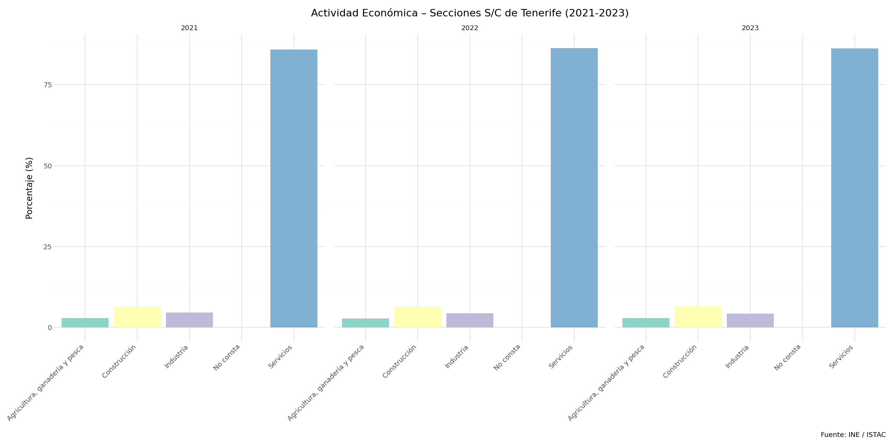
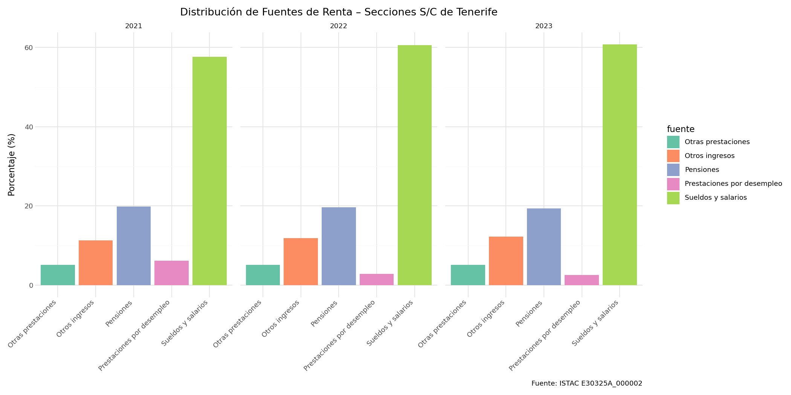
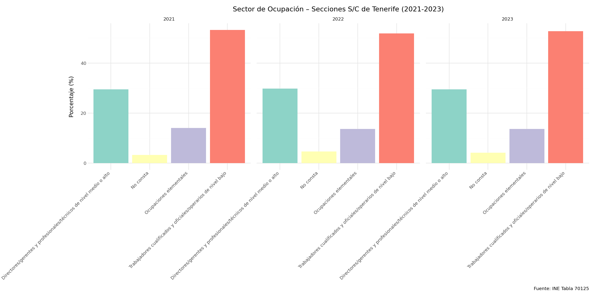
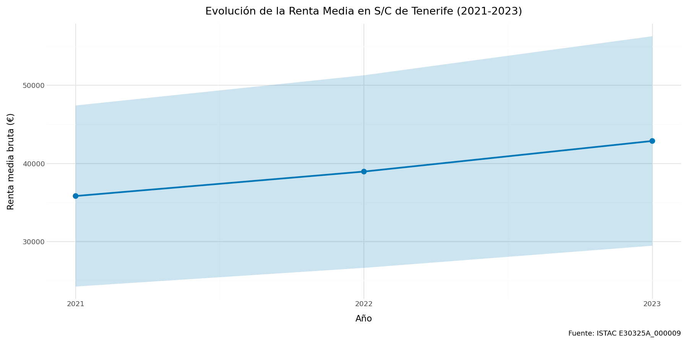
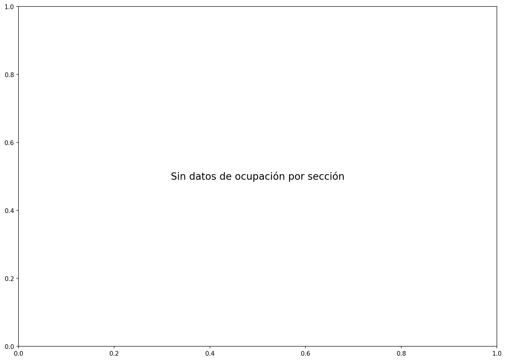
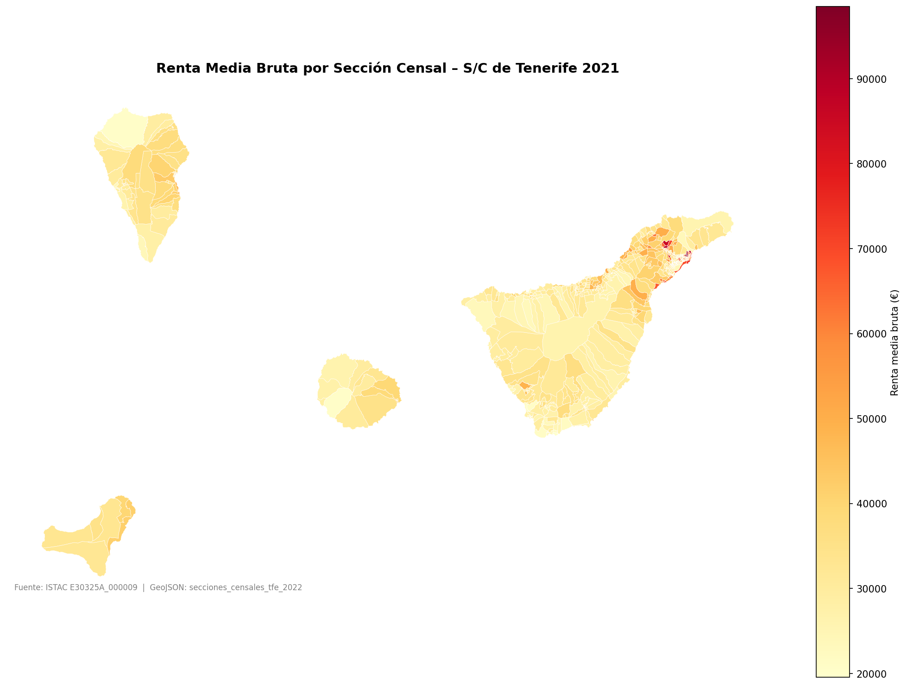
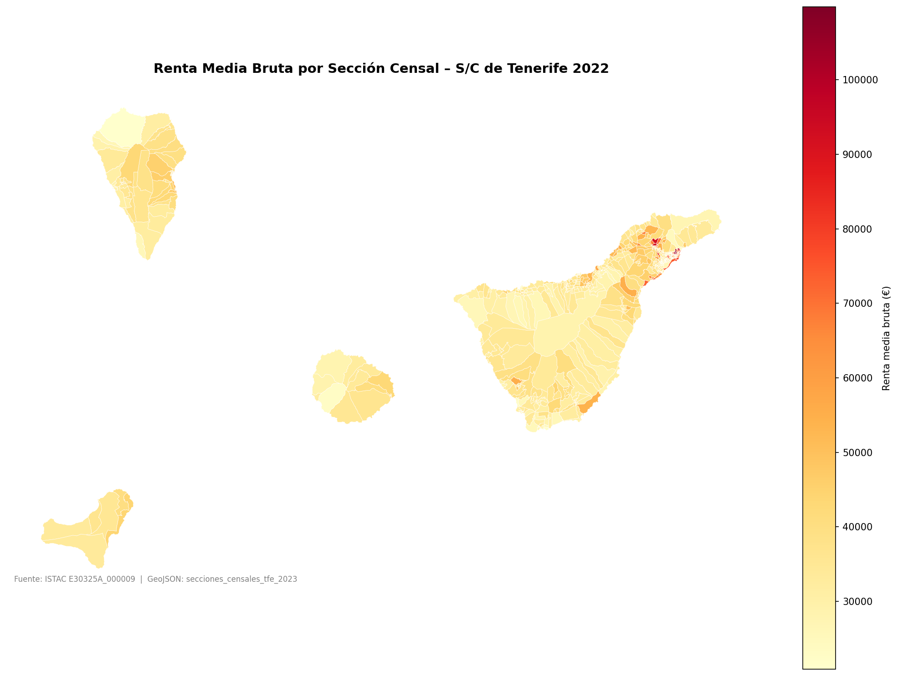
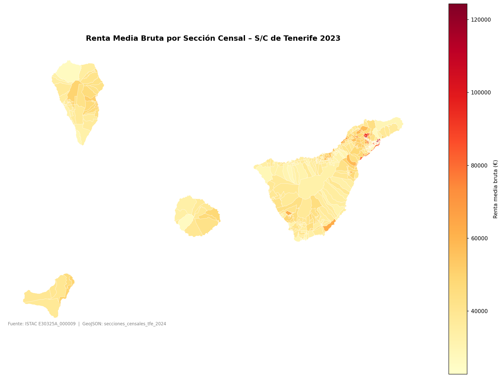

Visualizaciones – Secciones Censales S/C de Tenerife
Pipeline DataOps con Dagster · Gramática de Gráficos con Plotnine · IA Generativa

Grafico Actividad

Grafico Distribucion Ingresos

Grafico Ocupacion

Grafico Tendencia Renta

Mapa Ocupacion 2023

Mapa Renta Secciones 2021

Mapa Renta Secciones 2022

Mapa Renta Secciones 2023